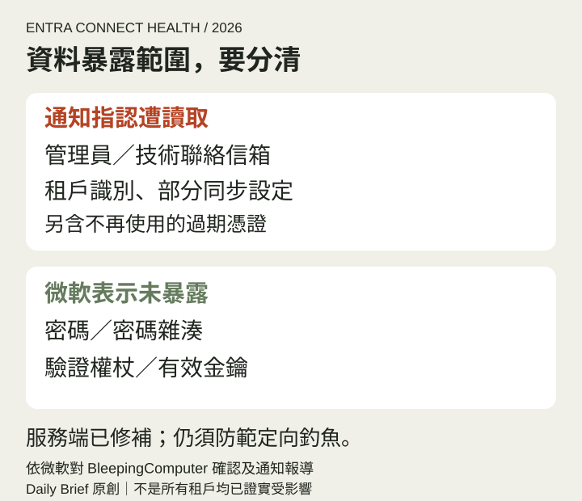

SECURITY / THE ESSENTIALS
微軟確認 Entra Connect Health 資料遭讀取，管理員聯絡資訊外洩
收錄於 2026-11-23 日報 · BleepingComputer 原始採訪／微軟直接確認
已確認的進展
- BleepingComputer 11 月 21 日實際取得微軟發言人確認：Entra Connect Health 安全問題涉及租戶聯絡與設定中繼資料，19 日已修補，受影響客戶透過 Azure Service Health 收到通知。其檢視的通知說，20 日調查確認未授權唯讀存取，未發現設定遭改動。
- 資料包括管理員／技術聯絡信箱、租戶識別與部分同步設定，以及不再使用的過期憑證。微軟表示未暴露密碼、密碼雜湊、驗證權杖或有效金鑰；本項漏洞不需客戶安裝軟體修補。
影響與限制
- 真實管理員信箱與租戶資訊可能提高定向釣魚可信度，應查看租戶通知、檢視登入紀錄並保護高權限帳號。 公開未有受影響租戶總數或攻擊開始時間；通知原文不是公開公告，本則將通知內容與微軟直接確認分開歸屬，不將過期憑證當有效金鑰。

原文與查核
以上為整理與解讀，重要細節請回到原文核對。
- BleepingComputer 原始採訪／微軟直接確認 ↗發布 2026-11-21 · 查核 2026-11-23T05:01:28+08:00